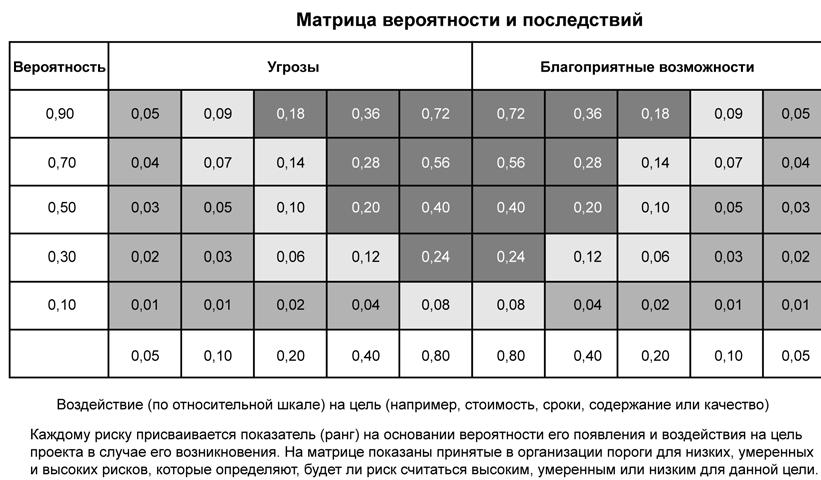

Качественный анализ рисков (п.11.3, рис.14.1)
Качественный анализ рисков включает в себя расстановку приоритетов для идентифицированных рисков, результаты которой используются впоследствии, например, в ходе количественного анализа рисков (п. 11.4) или планирования реагирования на риски (п. 11.5). Организации могут существенно повысить эффективность исполнения проекта, сосредоточив усилия на рисках, обладающих наивысшим приоритетом. При качественном анализе рисков определяются приоритеты идентифицированных рисков на основании вероятности их возникновения, их влияния на достижение целей проекта в случае возникновения этих рисков, а также с учетом ряда других факторов (например, временных рамок и толерантности к риску, заложенной в ограничениях проекта по стоимости, расписанию, содержанию и качеству).
При помощи определения степени вероятности и воздействия, а также данных, полученных при опросах экспертов, можно скорректировать часто возникающую при выполнении данного процесса систематическую погрешность данных. При наличии плановых операций, выполнение которых очень плотно привязано к определенным временным промежуткам и подверженных воздействию риска, степень важности риска увеличивается многократно. Оценка качества доступной информации, относящейся к рискам проекта, также может способствовать пониманию степени значимости риска в данном проекте.
Качественный анализ рисков - это обычно быстрый и недорогой способ установки приоритетов в процессе планирования реагирования на риски, и, при необходимости, служит основой для проведения количественного анализа рисков. Качественный анализ рисков подлежит уточнению на протяжении всего жизненного цикла проекта и должен отражать все изменения, относящиеся к рискам проекта. Для проведения качественного анализа рисков необходимы выходы процессов планирования управления рисками (п. 11.1) и идентификации рисков (п. 11.2). По окончании качественного анализа рисков можно переходить к количественному анализу рисков (п. 11.4) или непосредственно к планированию реагирования на риски (п. 11.5).
11.3.1 Качественный анализ рисков: входы
11.3.1.1 Активы организационного процесса. В процессе качественного анализа рисков могут использоваться данные о рисках в предыдущих проектах и база накопленных знаний.
11.3.1.2 Описание содержания проекта. В стандартных или периодически повторяющиеся проектах с каждым разом появляется больше хорошо понимаемых рисков. Для проектов, основанных на последних достижениях технологии или впервые использующих какую-либо технологию, а также для очень сложных проектов характерна высокая степень неопределенности. Степень неопределенности можно оценить при изучении описания содержания проекта (п. 5.2.3.1).
11.3.1.3 План управления рисками. Для качественного анализа рисков существенны следующие элементы плана управления рисками:
1) распределение ролей и ответственности в управлении рисками, бюджетом и плановыми операциями по управлению рисками;
2) категории рисков;
3) определение вероятности возникновения и возможных последствий;
4) матрица вероятности и последствий
5) уточненная толерантность к риску участников проекта (а также факторы внешней среды предприятия, см. п. 4.1.1.3). Обычно эти входы адаптируются для конкретного проекта в ходе процесса планирования управления рисками. Если этих входов нет, их можно разработать в ходе процесса качественного анализа рисков.
11.3.1.4 Реестр рисков. Ключевым элементом в реестре рисков для проведения качественно анализа рисков является список идентифицированных рисков (п. 11.2.3.1).
11.3.2 Качественный анализ рисков: инструменты и методы
11.3.2.1 Определение вероятности и воздействия рисков предполагает проведение исследований на предмет определения степени вероятности возникновения того или иного специфического риска в процессе выполнения проекта. При оценке воздействия риска определяется потенциальный эффект, который он может оказать на цель проекта (например, время, стоимость, содержание или качество), включая негативные воздействия для угроз и позитивные воздействия для благоприятных возможностей.
Вероятность и воздействие оцениваются для каждого идентифицированного риска. Оценка рисков может производиться на основании результатов опросов или совместных совещаний со специалистами, выбранными по критерию осведомленности в области категоризации рисков. В число опрашиваемых могут входить члены команды проекта и, возможно, лица, не принимающие участие в проекте, но имеющие широкие познания в этой области. Проведение экспертных оценок является необходимостью, поскольку может оказаться, что информации о рисках, находящейся в базах данных организаций, и относящейся к прошлым проектам, недостаточно. Для проведения дискуссий, возможно, потребуется помощь опытного ведущего, так как участники могут обладать недостаточным опытом в оценке рисков.
На основании результатов опросов или встреч производится определение степени вероятности возникновения и воздействия каждого риска на цели проекта. Фиксируется также пояснительная информация, включая допущения, использованные для определения уровней рисков. Вероятность возникновения и воздействия рисков ранжируются в соответствии с определениями, представленными в плане управления проектом (п. 11.1.3.1). В некоторых случаях, риски с явно низкой степенью вероятности возникновения и воздействия в рейтинг рисков не включаются, но включаются в список рисков, за которыми в дальнейшем ведется наблюдение.
11.3.2.2 Матрица вероятности и последствий. Расстановка приоритетов рискам для последующего количественного анализа (п. 11.4) и реагирования (п. 11.5) осуществляется на основании рейтинга рисков. Присвоение риску определенного места происходит на основе оценок их вероятностей возникновения и последствий (п. 11.3.2.2). Оценка важности рисков и, следовательно, приоритетности для обработки обычно осуществляется при помощи таблицы соответствия или матрицы вероятности и последствий (рис.14.5). Такая матрица содержит комбинации вероятности и воздействия, при помощи которых рискам присваивается определенный ранг: низкий, средний или высший приоритет. В зависимости от предпочтений организации, матрица может содержать описательные термины или цифровые обозначения.
Организация должна определить, какие комбинации вероятности и воздействия соответствуют высокому риску ("красная зона"), среднему риску ("желтая зона") или малому риску ("зеленая зона"). В черно-белой матрице эти условия могут обозначаться различными оттенками серого цвета. В матрице, изображенной на рис.14.5, область темно-серого цвета (наивысшие цифровые значения) обозначает высокий уровень риска, область среднего по интенсивности серого цвета (наименьшие цифровые значения) обозначает низкий уровень риска, а область светло-серого цвета (средние по значению цифровые обозначения) обозначает средний уровень риска. Обычно эти правила по определению рейтинга рисков устанавливаются в организации до начала проекта и включаются в активы организационного процесса (п. 4.1.1.4). Правила определения ранга рисков могут дорабатываться применительно к каждому конкретному проекту в процессе планирования управления рисками (п. 11.1). Для данных целей также часто используется матрица вероятности и последствий, например, такая, которая изображена на рис.14.5.

Рисунок 14.5 - Матрица вероятности и последствий
Как показано на рис. 14.5, организация может определять ранг каждого риска отдельно для каждой цели (например, для стоимости, времени или содержания). Кроме того, организация может устанавливать способы определения общего рейтинга для каждого риска. И, наконец, управление угрозами и благоприятными возможностями может осуществляться при помощи той же матрицы и определений различных уровней последствий.
Ранг риска помогает управлять реагированием на риски. Например, для рисков, оказывающих в случае возникновения негативное воздействие на цели проекта (угрозы), а потому расположенных в зоне высокого риска (темно-серого цвета) матрицы, необходимы предупредительные операции и агрессивная стратегия реагирования. Для угроз, расположенных в зоне низкого риска (средний по интенсивности серый цвет), осуществление предупредительных операций может не потребоваться. Достаточно того, что они помещены в список для наблюдения или добавлены в резерв непредвиденных обстоятельств.
То же самое касается и благоприятных возможностей: те, которые можно получить легче всего и обещают наибольшую выгоду (они находятся в зоне высокого риска - темно-серого цвета), должен быть присвоен наибольший приоритет. За благоприятными возможностями, находящимися в зоне низкого риска (средний по интенсивности серый цвет), следует установить наблюдение.
11.3.2.3 Оценка качества данных риска. Для того, чтобы результаты качественного анализа рисков были надежны, необходимы точные и непредвзятые данные. Анализ качества данных риска представляет собой технологию оценки полезности данных о рисках для управления проектом. Анализ включает в себя изучение глубины понимания риска, а также точности, качества, надежности и целостности данных о риске.
Использование низкого качества данных о риске может привести к тому, что результаты качественного анализа рисков окажутся мало пригодными для использования в проекте. При отсутствии качественных данных, возможно, потребуется сбор новых, более высоких по качеству данных. Часто сбор информации о рисках вызывает немало трудностей и требует большего по количеству времени и ресурсов, нежели предусмотрено первоначальным планам.
11.3.2.4 Классификация рисков. Для определения областей проекта, наиболее уязвимых для неопределенности, риски проекта можно классифицировать по источнику риска (например, с помощью ИСРс), по области проекта, которую затрагивает риск (например, с помощью ИСР) или по какому-либо иному критерию (например, по фазе проекта). Эффективную систему реагирования на риски можно разработать на основе группировки рисков по их главным причинам.
11.3.2.5 Оценка срочности риска. Риски, требующие немедленного реагирования, могут рассматриваться как наиболее срочные для принятия ответных мер. Показателями приоритетности могут являться время реагирования на риск, симптомы и признаки риска, а также ранг риска.
11.3.3 Качественный анализ рисков: выходы
11.3.3.1 Реестр рисков (обновления). Создание реестра рисков начинается в процессе идентификации рисков. Обновление реестра рисков происходит на основе информации, получаемой от качественного анализа рисков, а затем обновленный реестр рисков включается в план управления проектом.
Обновления реестра рисков на основе информации, получаемой от качественного анализа рисков, включает в себя:
- Относительное ранжирование или список приоритетов рисков проекта. Для классификации рисков в соответствии с их индивидуальной значимостью может использоваться матрица вероятности и последствий.
Затем менеджер проекта может использовать список рисков, расставленных по приоритетности, чтобы сосредоточить особое внимание на тех из них, которые имеют высокую значимость для проекта, а реагирование на риски может дать наилучший результат. Риски могут быть расставлены по приоритетности отдельно для стоимости, времени, содержания, и качества, поскольку организации могут по-разному оценивать значимость одних целей проекта по отношению к другим.
Описание основы для оценки вероятности и воздействия должно быть включено в перечень оцененных рисков, поскольку это важно для проекта.
- Риски, сгруппированные по категориям. Группирование рисков по категориям может выявить общие для них основные причины или те области проекта, на которые следует обратить особое внимание.
- Выявление концентрации рисков позволяет повысить эффективность реагирования на риски.
- Список рисков, требующих немедленного реагирования. Риски, требующие немедленного реагирования, и риски, реагирование на которые можно выполнить позже, могут быть помещены в разные группы.
- Список рисков для дополнительного анализа и реагирования. Некоторые риски могут потребовать дополнительного рассмотрения (включая количественный анализ рисков), а также дополнительных ответных действий.
- Список рисков с низким приоритетом, нуждающихся в наблюдении. Риски, которые в результате качественного анализа рисков не получили высокого приоритета, могут быть помещены в список для дальнейшего постоянного за ними наблюдения.
- Тренды результатов качественного анализа рисков. По мере выполнения повторных анализов могут проясниться тренды определенных рисков, что может служить основанием для определения срочности реагирования на эти риски или необходимости дополнительного рассмотрения.